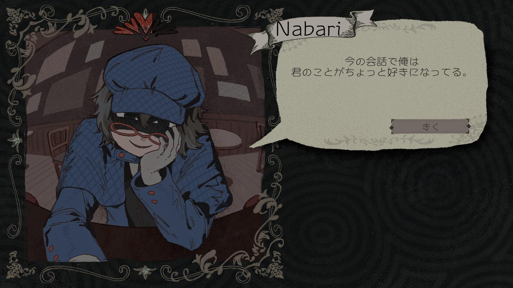
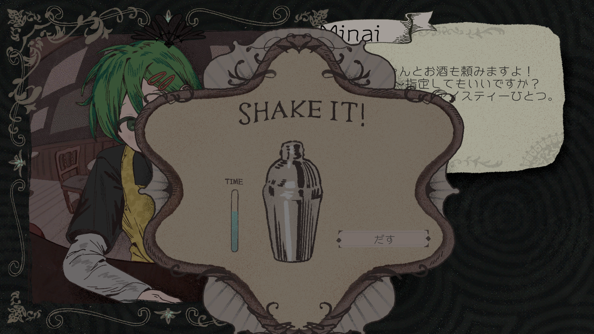
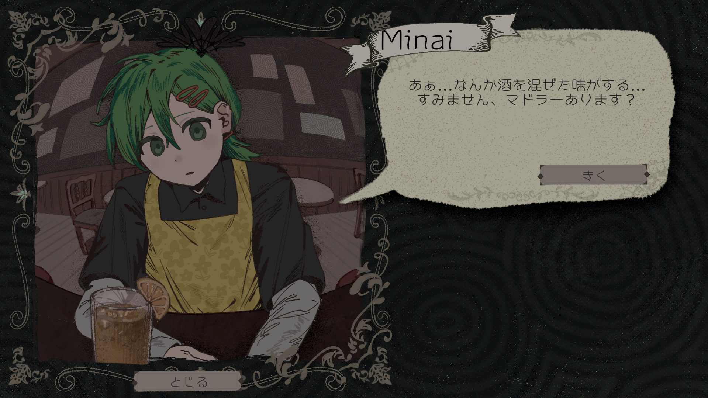

フリーゲーム
ゲームジャム
不穏ADV
マルチエンド
プランナーの陽以前とデザイナーのどくたけのこによる共同制作、
バーテンダーとなり客の裏の顔を暴く不穏ADV「Shake & Betray」を、
2026年3月22日にフリーゲーム投稿サイト「unityroom」にて配信開始した。
PCブラウザにて無料で最後までプレイ可能。
プレイ時間は一周およそ5分程度。エンド数は7個となっている。
バーのカウンター越しに交わされる、秘密と本音。
シェイカーを振るたびに深まる関係は、やがて裏の顔を暴く。
「Shake & Betray」はノベルとミニゲームが融合した、
大人のバーテンダー体験だ。

ノベルパートでは二つの選択肢を選びながら客との交流を重ねていく。心を開かせることができれば、彼らはやがてその裏の顔をさらけ出すだろう。
しかし、裏の顔を持つ彼らへの選択を誤れば、あなたは店を閉めることになる。

ミニゲームパートではバーテンダーとして腕を振るう。シェイカーをクリックしてカクテルを混ぜよう。混ぜる時間により客の評価は変動する。

今回は振る時間が足りなかったようで客は不服そうにしている。操作はクリックのみ。ゲームの腕前に左右されることなく、
このバーの不穏な雰囲気を存分に味わうことができる。
あなたはこのバーのマスターだ。客を受け入れるか否かはあなたの手に握られている。
怪しいと感じたなら、心を開いた彼らを裏切り通報することも可能。
裏の顔を暴くか、彼らを裏切るか——選択はあなた次第だ。 Play Game ← Back
unityroom
Release
2026/03/24
Play Time
約10分
Tools
Unity